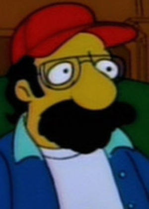

Christopher Nolan
 De: La Frikipedia, la enciclopedia extremadamente seria.
De: La Frikipedia, la enciclopedia extremadamente seria.
De la serie grandes personajes:
Nolan viendo a
Ellen Page desnuda.
| Nacimiento
|
07 91
|
| Muerte
|
Solo despertaría del sueño.
|
| Ocupación
|
Dios.
|
| Nacionalidad
|
Gran Bretañence.
|
| Malo o bueno
|
Bueno por hacer buen cine. Malo por provocar muertes en todo el mundo.
|
| Atentados contra la humanidad
|
Inducir el suicidio en los espectadores.
|
| Religión
|
Adam Westsista.
|
| Notas
|
3.14
|
«Ese Batman no es mas oscuro que el mío...»
~ Adam West sobre el caballero de la noche.
«¿Que no estabas muerto?»
~ Tim Burton respondiendole a Adam West.
«Aún no... porque ¡soy Batman!»
~ Adam West delirando.
«What The Fuck BOOOOOOMMM!!!»
~ Tú al ver una peli de Christopher Nolan.
Christopher Nolan llamado también Antichristopher Nolan, Christopher Mola o Christopher Norris, es un renombrado director de lo que algunos llaman "cine". Sus creaciones son meras parodias de películas porno árabes. Entre sus películas más conocidas están: Inception, Me monto y la trollogía del Hombre Murciégalo, siendo uno de los grandes Iluminatis involucrados en la industria de Hoolywood.
Su inception origen
Se dice que es descendiente directo de Jesus, hijo de una mujer con Síndrome de Asperger y un hombre con Síndrome de Down. Desde pequeño demostró mucho interés en el arte audio visual, grabando a sus compañeras en los vestidores cuando estaba en secundaria. Increíblemente, ganó un premio en un festival de cortometrajes por uno de esos videos.
Debutó con su primer largometraje Te Follo-wing, pero saltó a la fama con su disparatado delirio Memento, que le causó trastornos mentales a varios espectadores durante la proyección, e incluso cobró la vida de uno al que le explotó el cerebro.
Jesus al ver a Christopher Nolan en la calle.
Gracias a la sociopatía que heredó de Jesus, pudo convencer a Warner Bros que reiniciara una nueva franquicia de Batman, estrenando Batman en Beijin, seguida de su no tan famosa secuela Batman: El Granjero de la noche y por su última parte Batman: El granjero de la noche se vende. Dicha trilogía recaudó millones de vidas, ya que en cada estreno o habían suicidios por sobredosis o la visita de Rambo a ciertas salas de cine. <<Siii bien hecho Christopher Nolan, bien hecho... hijo de puta todo fue planeado!! >>
Actualmente es reconocido por su disparatado estilo de hacer un completo desorden de la gran puta con sus cintas, y es que, su incapacidad de filmar una peli como Dios manda, hace que un filme cualquiera sea editado como su polla quiere; de una manera en que solo alguien que padezca dislexia con desorden mental podría verla en orden normal.
Psicologia con Christopher Nolan
Como todo famoso, Christopher Nolan tuvo una cuenta en el Jack Black. Recientemente, se perdio por Silent Hill y volvio con videos más cargados de mierda emoción y risa. Sin embargo, su cuenta fue suspendida debido a que acumulo tres faltas por polémicas.
Cortometraje
- Doodlebug: Trata sobre un friki paranóico que intenta aplastar a un wombat con su zapato, pero luego se da cuenta que no es un wombat si no él mismo pero reducido de tamaño por las pastillas de chiquitolina. Entonces el lo aplasta con el zapato gigante y de repente sale algo que le da sentido a todo el cortometraje de mierda.
Películas
 Steven Spielbergo será el director de "LLuvia de Tamales" en colaboración de Guillermo del Toro y Christopher Nolan.
- Following: Trata sobre un Stalker que vive en Sin Cyti y que sigue a Madona para ver si obtiene sexo de ella, pero es envuelto en un plan más malo que los chistes de la Inciclopedia.
- Memento: alucílep al ed olucítra le eel rojem ¿euq nebaS? ...y asopse us a onisesa neiuq rebas ereiuq euq laropmet aisenma noc erbmoh nu erbos airotsih anu sE
- Insomnia: En esta Al-capuccino es un detective que se enfrenta al Robin Williams por ser un hijo de puta. Pero como en toda buena peli de Nolan, el prota está más desquiciado que el mismo villano, por lo que suele tener alucinaciones en toda la peli (como el mismo Nolan).
- Batman en Beijin: En esta se muestra los orígenes del hombre murciégalo y del cómo fue entrenado por Quiu-Gon Jinn El de Búsqueda implacable (Taken).
- El Prestigio: En este se ve el enfrentamiento de Wolverine en un duelo a muerte con magia negra, en el que el científico friki Nicola Tezla tendría una participación. El gemelo nazi de Batman saldría para cagarla, y también tiene participación Alfred el de Batman.
- Batman: el cabashero de la noche: Todo comienza cuando uno de los hermanos Grimm enloquece por haber probado el éxtasis. Entonces, inspirado por Ronal McDonald, hace un cosplayer de payaso y le roba a la mafia. Luego hace un enfrentamiento Yaoi contra Batman por el alma de Gótica (Gotham City), pero Batman lo asesina con un aparente suicidio por sobredosis.
- Inception: Posiblemente la paranoia más friki del año 2011. Todo empieza con el Leonardo DiCaprio que se despierta en una playa, dos escenas después empieza haber muchos tiros, más tarde se despiertan en un asqueroso motel de Taiwan, sucesivamente un monton de pavos los aplastan y vuelven a despertar en el expreso polar... y...
- Batman: El cabashero de la noche asciende: Sucede que un fan de Hannibal Lecter le hace un cosplay y luego de inyectarse esteroides va atacar a Ciudad Gótica. Mientras tanto, la drogadicción de Brus Way lo mantuvo en 8 años de pedera aislada, hasta que salió para vengarse del mundo. La ex esposa de DiCaprio en la peli anterior (Inception), quiere trastornar y convencer a Brus Way de que todo es un sueño, pero Anne Hathaway no se lo permitirá. Y sucede que el tío que salió en Inception es Robin.
- Man of Steel: "El hombre con esteelo", en esta solo fue el productor, así que gran parte de la culpa fue del espartano Zack Shnyder como su director. Interpretado por el ex novio de Penny, que se enfrenta contra el tío de las cejas (Zodd).
- Interstellar: No, no es una precuela del musical sin sentido Children of the Corn.
- Lluvia de Pizzas: Trata sobre un científico drogadicto que logra inventar una maquina capaz de producir nubes que produzcan pizzas, y así convertirse en el Dios del nuevo mundo. La película será filmada en formato 3XD y se estrenará en 2015.
- Lluvia de Tamales: Será filmada en Guatemala y en algunas regiones de Mexico. Aunque aún no hay nada concreto, se confirmó que el director sería Steven Spielbergo y Guillermo del Toro como guionista. Chris sería el productor.
Cómo filmar una peli como las de Nolan

Bart-cuervo al ver el final de sus pelis.
Para poder filmar una peli como las de Nolan, primero debes ser un maniático trastornado con ganas de traumar a la humanidad con tus historias; tener un hermano llamado Jonatan Nolan y seguír los siguientes pasos:
- Tener un protagonista esquizofrénico, amnésico, con problemas de sueño y crisis existenciales, Mago o vigilante, entre otros.
- Usar los mismos actores una y otra vez, hasta que éstos mueran.
- Tener una banda sonora de puta madre.
- Que el principio sea el fin, que la mitad sea el principio y el fin sea la mitad.
- Agarrar la cinta de la peli y meterla en una licuadora; licuarla a velocidad media.
- Tomar otra peli diferente y meterla en la misma licuadora y mezclarlas.
- Una vez licuadas, sácalas y únelas con cinta adhesiva.
- Crearle un fin más fumado que el final del Planeta de los Simios de Tim Burton.
- Matar al actor que interpretó al villano, y hacerlo parecer un suicidio. Eso atraerá mas audiencia y recaudación.
Véase también
Autor(es):
- Fordus
- Likan003
- Salazar Slytherin
Frikipedia 2005-2016, Licencia
GFDL 1.2 - Extraído por FrikiLeaks